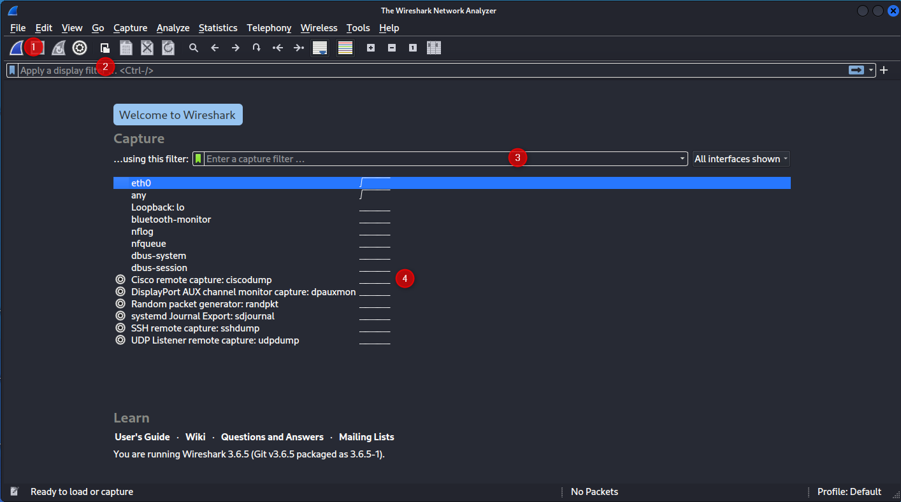
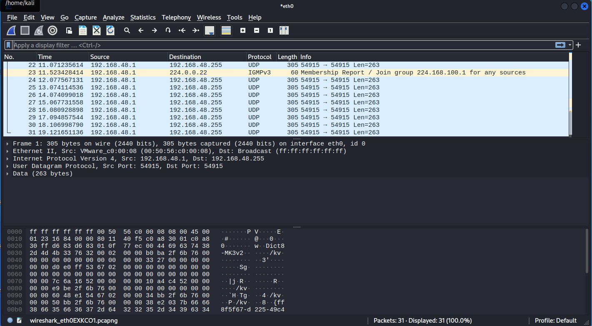

Wireshark
Contents
Wireshark#
Wireshark is a tool used for analyzing network traffic. It can both create and read “PCAP” or PacketCAPture files.
Installation#
Wireshark comes pre-installed in Kali, but it can be installed manually if you are on a different OS.
Linux#
Wireshark can be installed the same way as most other software
apt install wireshark
Windows / MacOS#
You’ll need to visit the official website : https://www.wireshark.org/download.html
The Basics#
Launch Page#
When we first open Wireshark, we are greeted by the launch page:

From here, we can see
The “start capture” button
The “filter”, when we have live or saved data to review
A “Capture” filter. If you click the green ‘flag’ it will show a list of defined filters.
My list of interfaces that support packet capturing, and some tools as well. Double click one of these (or pres (1) to start capturing packets)
Capture Window#
Once you have started a capture (or opened a saved one), you are presented with the capture window

This shows the history of captured packets, including simple information in the ‘ticker’ and extended information once one is selected.
Each packet is also colour coded for urgency / type.